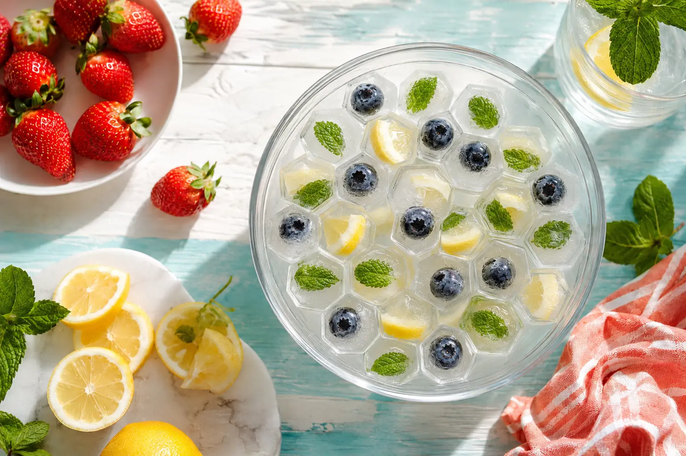
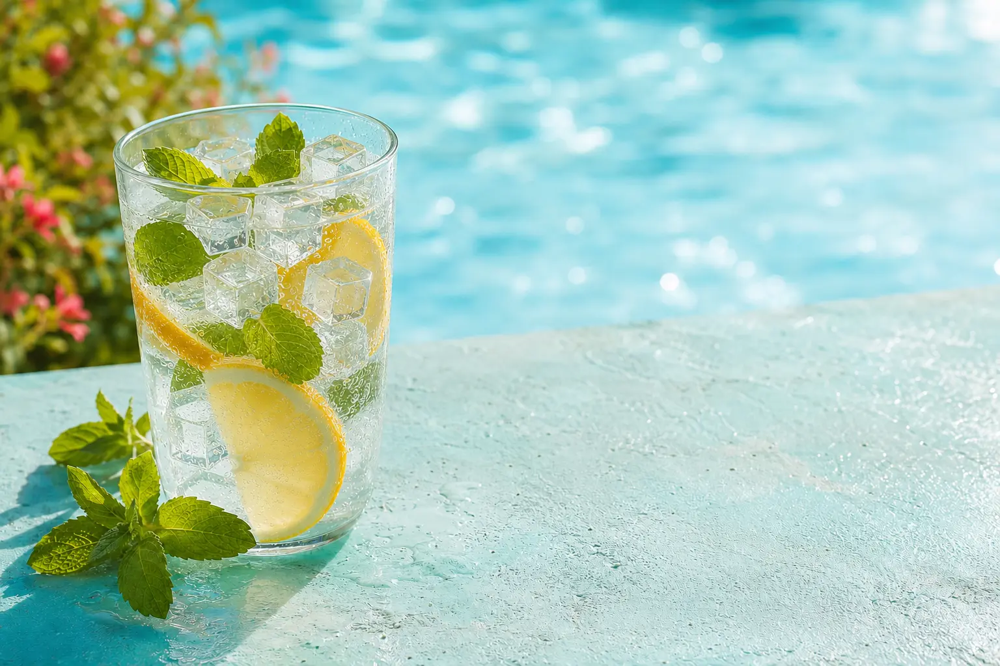

1
Lava prima dell’uso
Lava stampi e coperchi con acqua tiepida e un normale detergente per stoviglie, quindi risciacqua bene.
Istruzioni, consigli e idee estive per ottenere facilmente tanti piccoli cubetti di ghiaccio esagonali.
Scopri come usarloLava stampi e coperchi con acqua tiepida e un normale detergente per stoviglie, quindi risciacqua bene.
Appoggia lo stampo su una superficie piana. Versa lentamente l’acqua lasciando un piccolo spazio dal bordo.
Posizionalo delicatamente, senza cercare di incastrarlo. Porta lo stampo nel freezer mantenendolo orizzontale.
Attendi qualche secondo fuori dal freezer, fletti il silicone e premi ogni cavità dal fondo.

LFGB è il codice tedesco che disciplina anche i materiali e gli oggetti destinati al contatto con gli alimenti. Le verifiche applicabili valutano aspetti come la migrazione di sostanze e possibili alterazioni di odore o sapore.
Il coperchio è una protezione leggera: deve essere semplicemente appoggiato. Non deve scattare, incastrarsi o comprimere lo stampo.
Aiuta a proteggere il contenuto da contatti accidentali e dagli odori presenti nel congelatore. Lo stampo deve comunque restare in piano.

Inserisci piccoli pezzetti nelle cavità e completa con acqua.
Colorano l’acqua e rendono speciali bibite e aperitivi analcolici.
Congela il caffè già freddo: nel latte non annacquerà la bevanda.
Una combinazione profumata per acqua tonica e aperitivi.
Lascia lo stampo fuori dal freezer per alcuni secondi, fletti i lati e premi ogni cavità dal fondo.
Non arrivare fino al bordo: l’acqua aumenta di volume durante il congelamento e potrebbe fuoriuscire.
Lavalo dopo l’uso, lascialo asciugare completamente e mantieni pulito il congelatore e gli alimenti dall’odore intenso ben conservati.
Sì. Le bevande zuccherate possono congelare più lentamente e lasciare residui: lava accuratamente lo stampo subito dopo l’uso.